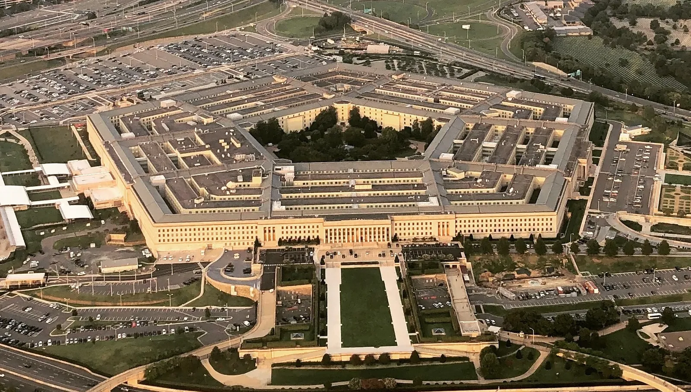

Pentagon UAP Reports 2024: What Does the Government Know?

It was December 2017. Readers of the New York Times found a strange story on the front page. It said the United States Department of Defense had been running a secret program. The program cost $22 million, and its job was to study unidentified flying objects.
Three blurry videos came with the story. United States Navy fighter pilots had recorded them. The videos showed objects that sped up at impossible speeds and changed direction in an instant. They seemed far ahead of anything the American military owned.
The Pentagon, the home of the Department of Defense, confirmed that the videos were real. The objects in them are still unidentified. Seven decades of official silence had ended.
Since then, the government has changed how it talks about this subject. It now uses the name Unidentified Anomalous Phenomena, or UAP. Anomalous means strange.
Congress, which makes the laws of the United States, has held hearings where witnesses spoke under oath. The Pentagon has opened a new office to study reports. It is called the All-domain Anomaly Resolution Office, or AARO.
A former intelligence officer has told Congress that the government has recovered “non-human” spacecraft and is hiding the truth. And in 2024, AARO released its biggest report so far. It had looked at more than 1,500 UAP cases. Most sightings had ordinary explanations. But some did not.
This story is not only about UFOs. It is about government secrets, official denial, and the limits of what people know. It is also about a clash between national safety and the public’s right to know.
Navy pilots risked their careers to report what they saw. Intelligence officials went public with huge claims. And Congress grew more and more annoyed as the Defense Department avoided its questions.
The story runs from Project Blue Book in the 1950s to the sensors of the 2020s. At its heart is one question that the world’s most powerful military has been unable, or unwilling, to answer. What is flying in our skies?
The three Navy videos that spread around the world in 2017 are known as FLIR, GIMBAL, and GOFAST. They are still the strongest pictures of this kind that the government has ever accepted as real.
The FLIR video is also called “Tic Tac.” It was recorded on November 14, 2004, by Lieutenant Commander Chad Underwood. He was flying an F/A-18F Super Hornet jet from the USS Nimitz carrier strike group. The ships were about 100 miles southwest of San Diego.
For days before that, the advanced SPY-1 radar on the USS Princeton had tracked strange objects that dropped from 80,000 feet to sea level in seconds.
Underwood was sent to look. He met a white object with no wings, about 40 feet long and shaped like a Tic Tac mint. It hovered in a jerky way above the rough ocean. Then it sped away at a speed Underwood called “impossible.”
The GIMBAL and GOFAST videos were recorded in January and February 2015. The pilots flew F/A-18 jets from the USS Theodore Roosevelt, off the East Coast.
In the GIMBAL video, a turning, disk-shaped object flies against the wind. One pilot can be heard saying: “There’s a whole fleet of them. Look on the AESA.” The GOFAST video shows an object that seems to race low over the ocean.
In April 2020, the Pentagon officially released all three videos. It said it did this “in order to clear up any misconceptions by the public on whether or not the footage that has been circulating was real.” For the first time, the Department of Defense formally said it had filmed things in the sky that it could not identify.
The 2004 Nimitz meeting is the best-recorded UAP event in military history. Early that November, the USS Princeton was in a training area off Southern California. Its SPY-1B radar began to pick up strange flying objects. They fell from 80,000 feet to sea level in seconds. No known aircraft can do that.
On November 14, Commander David Fravor and Lieutenant Commander Jim Slaight were on a training flight. They were told to go and find the object instead.
Fravor flew down toward a patch of foaming water with a white object hovering above it. The “Tic Tac” copied Fravor’s movements. Then it sped away.
Chad Underwood took off in a second jet with advanced cameras and recorded the FLIR video. Radar on the Princeton then showed the object again at a meeting point used by the patrol jets. That point was 60 miles away, and the object reached it in less than a minute. The commanders of the Nimitz Carrier Strike Group studied the event, but their results were never released.
The government’s interest in strange things in the sky began long before 2017. In 1947, Kenneth Arnold made a famous sighting, and many people then reported “flying saucers.” In 1948, the United States Air Force started Project Sign. It was the first official UFO study.
Project Grudge followed in 1949. The best known, Project Blue Book, began in 1952 and ran until 1969. In 17 years, it collected and studied 12,618 UFO reports.
Most turned out to be known things: weather balloons, aircraft, objects in space such as stars and planets, or unusual weather. But 701 cases stayed officially unidentified.
The project ended after the Condon Report of 1968. Its author was Edward Condon, a physicist at the University of Colorado. The report said more study of UFOs would probably not teach science anything useful. For the next 48 years, the official view of the government was that UFOs were not worth studying.
That changed in 2007. Harry Reid, a senator from Nevada, won $22 million of secret Pentagon money for a new program. It was called the Advanced Aerospace Threat Identification Program, or AATIP.
The program was run mostly by Robert Bigelow of Bigelow Aerospace, a private company. For ten years it stayed almost completely secret. Its director was Luis Elizondo. He was a military intelligence officer who had served in Afghanistan and Iraq.
Elizondo left the Pentagon in October 2017 as a protest. He said there was too much secrecy, and that the government refused to take the UAP threat seriously. One month later, he went public. And the world changed.
In June 2023, a new witness came forward. David Charles Grusch was 36 years old and a former Air Force intelligence officer. His claims were bigger than anything before.
Grusch had studied UAP for the National Geospatial-Intelligence Agency, and he had worked with the UAP Task Force. He filed an official whistleblower complaint with the Intelligence Community Inspector General. A whistleblower is a person who reports wrongdoing inside their own organization.
On July 26, 2023, he spoke under oath to the House Committee on Oversight and Accountability. Grusch said the government had run a program for many decades. Its goal was to recover “non-human” spacecraft and work out how they were built.
He said the program was hidden inside secret projects called special access programs, and that Congress had not been properly told about them. He said the government had recovered more than craft. It also had “non-human biologics.” By that he meant dead pilots who were not human.
Grusch made more claims. He said people had been harmed or threatened to keep the program secret. He also said the government of Benito Mussolini in Italy had recovered a spacecraft from another world in 1933. The United States, he said, obtained it in 1944-45.
Both the Department of Defense and NASA denied these claims. They said no such programs exist and no evidence of life from beyond Earth has been found. Critics pointed out that Grusch had not seen these things himself. He repeated what others had told him.
Still, he spoke under oath before Congress. That gave his words legal weight, and it pushed lawmakers to act.
That 2023 hearing was the most important in Congress about UFOs in more than 50 years. Three witnesses spoke under oath. The first was David Grusch. The second was Ryan Graves, a former Navy F/A-18 pilot. He had met UAPs during training flights from 2014-2015. The third was Commander David Fravor, now retired, who met the Tic Tac in 2004.
Graves said that sightings were “frequent” among Navy pilots off the East Coast. He said airline pilots had reported them too, but they were afraid it would hurt their jobs. Fravor described the Tic Tac meeting in detail.
The Pentagon’s official answer was to deny every claim about hidden programs. But the hearing still mattered. For the first time, trained and trusted witnesses spoke about UAP meetings and government cover-ups under oath. Lying under oath is a crime.
In July 2022, the Department of Defense had set up AARO. It replaced the Navy’s Unidentified Aerial Phenomena Task Force. Its wide job was to study UAP reports from everywhere: air, sea, space, and underwater. Its first director was Sean Kirkpatrick, a physicist and career intelligence official.
In March 2024, AARO released its Historical Record Review, Volume 1. It covered what the government had done about UAP from 1945 to the present. The report gave a blunt answer. In all its cases, there was no evidence of technology from another world or of non-human intelligence.
In November 2024, AARO released its yearly report, the FY2024 Consolidated Annual Report. It showed the office had looked at more than 1,500 UAP cases. Most of the solved cases were ordinary things: balloons, drones, birds, weather, tricks of the eye, and false signals made by sensors.
A number of cases stayed unsolved. But AARO blamed a lack of information, not amazing technology.
Critics see a weak point. AARO’s answers can only be as good as the information it is allowed to see. Grusch claims the most important evidence is locked inside special access programs that AARO cannot enter. If so, the office may be seeing only part of the picture. This gap between AARO’s findings and the whistleblowers’ claims is the main fight in the UAP debate today.
The push to open the files brought together politicians who do not usually agree. The group came from both parties. It included Senate Majority Leader Chuck Schumer, a Democrat from New York, and Senator Marco Rubio, a Republican from Florida. It also included Senator Kirsten Gillibrand, a Democrat from New York.
In July 2023, Schumer put forward the UAP Disclosure Act of 2023. It copied an older law, the JFK Assassination Records Collection Act. The new law would have set up an independent review board with the power to make secret UAP records public.
The bill passed the Senate. But a joint committee of Congress then made it much weaker. Reports said the Defense Department and the intelligence agencies had pushed back.
What could explain the truly strange cases? There are many ideas. Some UAP may be advanced aircraft or drones from China or Russia. Several AARO officials have said in private that this is the most likely answer for such cases.
Most reports are ordinary things that people mistook for something else. Nature can fool us too. Layers of warm and cold air, odd radar echoes, and glowing gas called plasma can all look like solid objects. They can seem to move in ways that break the rules of physics.
Some sightings may be highly secret American technology. Even the officers who reported them may not have been allowed to know about it.
The most surprising idea, and the one people argue about most, is technology from another world. Its supporters point to the Nimitz and Roosevelt meetings. Pilots described instant speed-ups, speeds many times faster than sound with no engine in sight, and objects that moved from air into water. They say no known technology can do this.
In September 2023, NASA shared the findings of its Independent Study Team on UAP. An astrophysicist named David Spergel led the team of 16 members. The team found “no reason to conclude that existing UAP reports have an extraterrestrial source.” Extraterrestrial means from beyond Earth. But the team also said the way information is now collected is far too poor.
NASA’s main advice was to collect information in new, careful ways: satellites, sensors on the ground, and reports from ordinary people who help science. These would replace the loose system of military pilot reports. NASA also said it would appoint a Director of UAP Research. The report mattered because the world’s leading space agency was formally studying UAP for the first time.
The Pentagon has come a long way in a few short years, from complete denial to hearings in Congress under oath. The Navy videos are real, and the objects in them are still unidentified.
The whistleblowers were trusted enough to start Inspector General complaints and new laws. AARO has looked at more than 1,500 cases and found no evidence of technology from another world. But it has also said that some cases are still unsolved.
People no longer argue about whether strange things appear in military airspace. They argue about what they are. Are they foreign drones? Secret American aircraft? Sensor mistakes? Or something truly unknown?
If the objects are foreign technology, the safety of the country is in serious danger. If they are something unknown, science may be about to change in a big way. And if they come from another world, it would be the most important event in human history.
After 70 years of secrecy, confusion, and mockery, the government is finally talking about this in public, even if slowly. The question is no longer whether something is in our skies. The question is what it is. And will the government tell us before we find out for ourselves?
References & Further Reading
Wikipedia: AARO — The All-domain Anomaly Resolution Office's mission, structure, and findings
📚 Recommended Reading: UFOs: Generals, Pilots, and Government Officials Go on the Record by Leslie Kean (on Amazon) — As an Amazon Associate, we earn from qualifying purchases.
Editorial note: UAP investigations are ongoing and new reports may revise current conclusions. See our Editorial Policy.